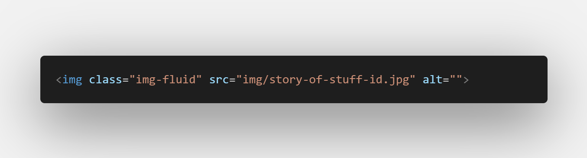
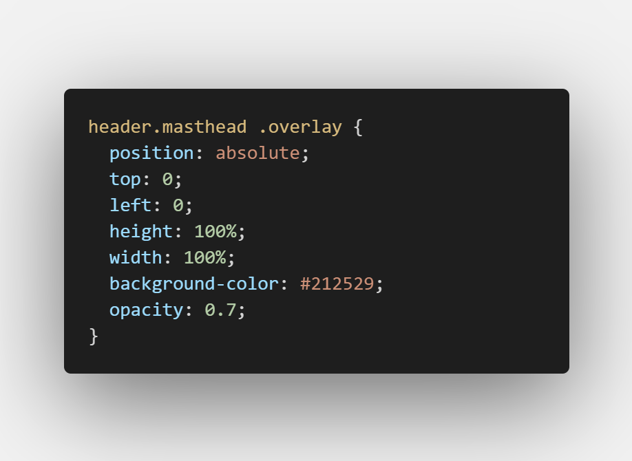
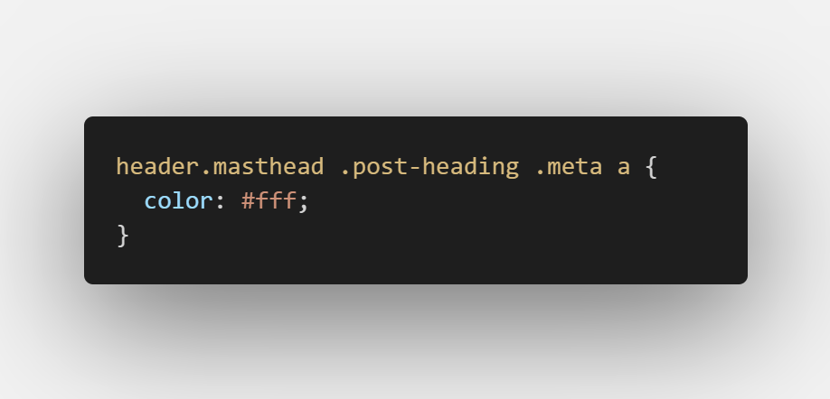
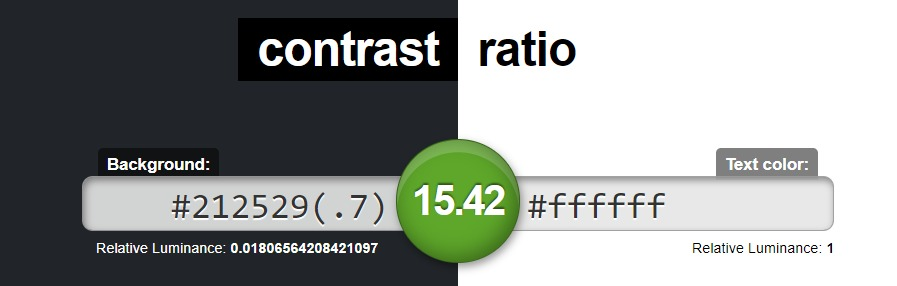

Today's post will describe some of the successes and failures faced while implementing accessibility on my own site. There were a number of issues that came up during the initial assessment and although I won't cover all of them in this post, I will go over a few of them.
Full disclosure: Bootstrap was used as the framework for this blog so a lot of the accessibility issues are due to my own inexperience and ignorance. More to follow on this.
The tools used to analyze accessibilty on this site include the Lighthouse Report and WebAim's WAVE Web Accessibility Evaluation tool.
The Evaluations
Lighthouse is an open-source, automated tool used for improving the quality of web pages and works with Chrome DevTools. A quick audit of my site revealed contrast and labeling issues:
Lighthouse Findings
| Error | Details |
|---|---|
| Contrast | Background and foreground colors do not have a sufficient contrast ratio |
| Names and Labels | Links do not have a discernible name |
I also ran my site through WAVE's evaluation tool, which revealed a number of other issues:
WAVE Findings
| Error | Details |
|---|---|
| Linked image missing alternative text | An image without alternative text results in an empty link |
| Empty link | A link contains no text |
| Very Low Contrast | Very low contrast between foreground and background colors |
| Link to PDF document | A link to a PDF document is present |
Both evaluations included detailed reports on failing elements and provided guidelines on how to fix them.
Implementing Fixes
I'll focus today's post on the following items which should help to move the site in the right direction.
- Missing alternative text
- Empty links
- Contrast error
- PDF document warning
1. Alternative Text
Images that are the only thing within a link must have descriptive alternative text.
Guideline 1.1.1
Text Alternatives: Provide text alternatives for any non-text content
| Success Criteria | WebAIM's Recommendations |
|---|---|
| 1.1.1 Non-text content |
|
This is one thing I failed at big time. I would say 90% of the images on the site did not include a text alternative. Based on WebAIM's recommendations, I went through and updated all the images to include an appropriate and descriptive alt text.
 Image code missing alternative textWhat was originally left blank with most images:
alt=""
was updated to something more like:
alt="original code missing appropriate alternative text"
I can have trouble finding the right words sometimes but this is definitely worth the extra bit of effort.
2. Empty Links
Empty Links can cause confusion when the purpose of the link is unclear.
Guideline 2.4
Navigable: Provide ways to help users navigate, find content, and determine where they are.
| Success Criteria | WebAIM's Recommendations |
|---|---|
| 2.4.4 Link Purpose |
|
Both the Lighthouse and WAVE reports pointed out the missing text from the social link in the footer. For readability, I got left off a few lines of code:
<a href="https://github.com/eilisglee">
</a>
It can be argued that the link itself describes its context but I went ahead and updated the empty link to include a description of its purpose anyway.
<a href="https://github.com/eilisglee">
Eilis' GitHub Portfolio
</a>
I may do a little more research on the subject though as I'm not sure how I feel about it aesthetically.
3. Contrast Errors
Adequate contrast is necessary for all users, especially users with low vision.
Guideline 1.4
Distinguishable: Make it easier for users to see and hear content including separating foreground from background
| Success Criteria | WebAIM's Recommendations |
|---|---|
| 1.4.3 Contrast (Minimum) |
|
When I think about contrast, I tend to think in terms of color so I was a surprised to learn that contrast
can also be determined by the size of the text as well as the boldness of it. The algorithim in determining
color contrast includes checking that all text elements have contrast between the foreground text and the
background colors to meet the contrast ratio minimums. A number of accessibility analysis tools,
however, do not report on text elements
that have a background-image or are obscured by other elements or images of text. This would
need to be calculated manually.
The Bootstrap design used for this site came with a set of base styles and functionality, which helped to kick-start this blog a lot faster than it would have without. With the base styles, the heading overlay and text colors were already in place.
Both the Lighthouse and WAVE reports flagged a number of elements in the navigation bar as having low contrast ratio but were unable to provide accurate readings due to the background image and overlay. A quick look at the css and I was able to find the colors needed to evaluate contrast.
 Heading overlay background-color #212529  Heading text color #fffSince the Lighthouse and WAVE reports weren't able to fully evaluate the header contrast (and my math skills are a little rusty), contrast-ratio.com was able to fill the gap by calculating the contrast ratio based on the colors used.
 Contrast ratio 15.42 based on background color #212529 and text #fff4. Link to PDF document
Unlike the other errors in this assessment, "Link to PDF document" was listed as an alert and does not currently have standards under WebAIM's WCAG 2.0 guidelines. WebAIM does offer recommendations in PDF Accessibility though and according to the WAVE report summary, unless authored with accessibility in mind, PDF documents usually have accessibility issues. PDF documents can also require additional software to view, which can be difficult for some people to access.
WebAIM recommends that PDF documents be natively accessible or as an alternative, HTML content should be used in its place. In my previous posts on Usability, I included PDF download links of the test scripts I used:
href="design/postable-mobile-test-script.pdf"
With WebAIM's recommendations in mind, the PDF documents I had up were both taken down and replaced with HTML content instead:
href="design/postable-mobile-test-script.html"
This was a quick and easy change which pretty much just involved saving the original documents to a different format.
Challenges
When I first started scanning the accessibility reports, I wasn't quite sure how I was going to tackle the contrast errors because I couldn't see any. It's been a really enlightnening experience so far and I think it'll be something that continues to challenge me.
Thoughts on Accessibility with Bootstrap
Overall, I think Bootstrap is great when it comes to accessibility. The framework is tried and tested but it's ultimately up to the developer to ensure that their websites are fully accessible. There are a number of tools we can use to help us make the right decisions and Bootstrap is just one of them.